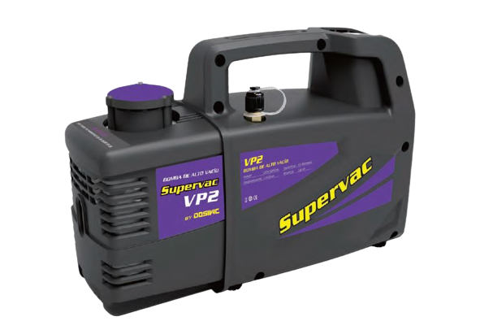

VACIO
BOMBAS DE VACIO ROTATIVAS A PALETA
DVRII
BOMBA COMPACTA PARA APLICACIONES EN LA INDUSTRIA DE LA REFRIGERACION
DVR
EN REEMPLAZO DE LA DVR140 SURGE LA DVR/6CFM - BOMBA DE VACIO MULTI PROPOSITO
SUPERVAC

APTA PARA TRABAJOS DE REFRIGERACION INICIAL EQUIPOS PEQUEÑOS
DVL
APTA PARA TRABAJOS DE LABORATORIO DE PEQUEÑO PORTE
BOMBAS DE VACIO POR SELLO DE AGUA/ANILLO LIQUIDO
DSHC
PARA TODO TIPO DE PROCESOS INDUSTRIALES HASTA -30TOR DE NIVEL DE VACIO